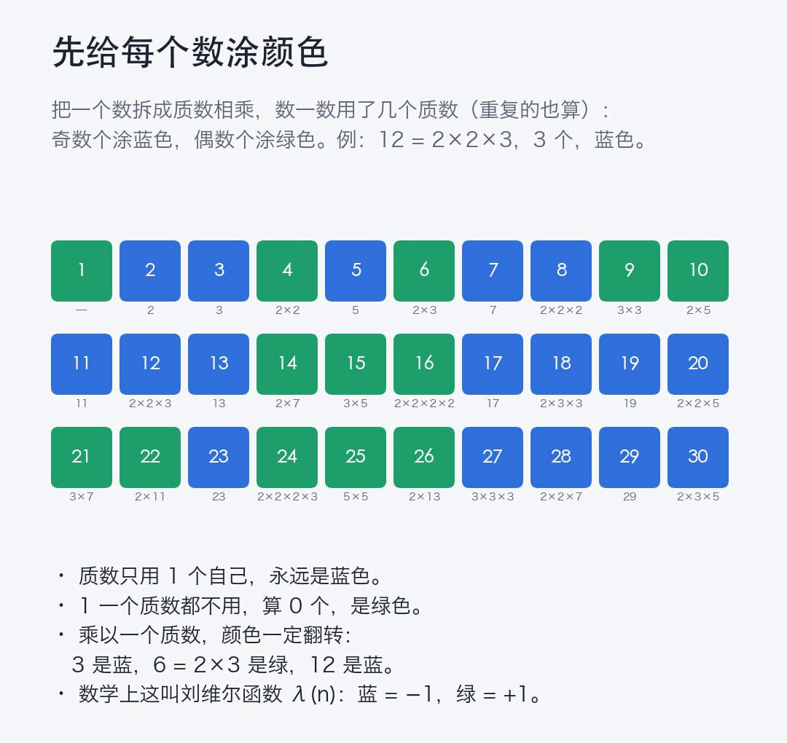
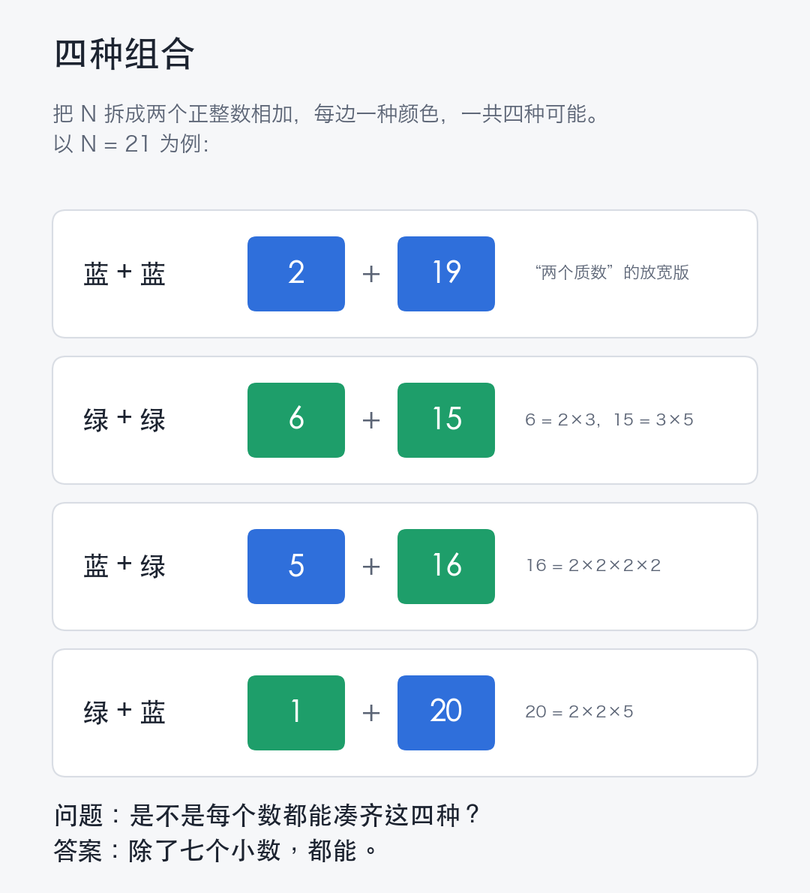

哥德巴赫的"放宽版"：每个整数都能拆出四种颜色组合（无条件证明 + Lean 验证）
先说结论：除了 2、3、4、5、6、9、10 这七个数，每个整数 N 都能写成 N = a + b，并且 (λ(a), λ(b)) 可以取到四种符号组合中的任何一种。这里 λ 是刘维尔函数。证明不依赖任何未证明的猜想，主要结果用 Lean 4 做了形式化验证。
一、问题是什么
把 n 分解成质数相乘，数一数用了几个质数（重复的也算），奇数个记 λ(n) = −1（蓝色），偶数个记 λ(n) = +1（绿色）。质数都是蓝色，1 是绿色。

把 N 拆成两个正整数之和，两边各有一个颜色，共四种组合：蓝+蓝、绿+绿、蓝+绿、绿+蓝。问：是不是每个 N 都能把四种都凑出来？
"蓝+蓝"是哥德巴赫猜想的放宽版：哥德巴赫要求两个加数是质数，这里只要求各自有奇数个质因子（比如 8 = 2×2×2 也算）。

二、之前知道什么
- 2018 年 MathOverflow 上有人问：每个大于 2 的偶数能不能写成两个 λ = −1 的数之和（文献里把这个问题归于 Shusterman）。
- Mangerel（IMRN 2024）证明：N ≥ 11 时，λ(a)λ(N−a) 不可能对所有 a 都相同。所以"一蓝一绿"和"同色"都会出现，但分不出"蓝+蓝"和"绿+绿"各自是否出现。
- Mangerel（arXiv:2412.17199）在广义黎曼猜想下证明了：对足够大且不太"光滑"的 N，四种组合都出现，并且给出了次数的下界。
- 2026 年 9 月，一个匿名作者无条件地证明了偶数 N 的"蓝+蓝"，附有 Lean 证明。
三、我们做了什么
- 奇数 N 的情况全部做完，四种组合对所有 N ∉ {2,3,4,5,6,9,10} 都成立，没有任何假设。七个例外逐一核对，确实各缺至少一种。
- 给 Mangerel 的 IMRN 定理一个短得多的新证明。
- 一个更一般的结果：对任意取值 ±1 的完全积性函数 f，只要 f(2) = f(3) = f(5) = −1，那么一个质数 p 凑不齐四种组合，唯一可能是 f 在 (0, p/2) 上恰好等于勒让德符号 (·/p)。这个条件去不掉：按模 43 的勒让德符号来"涂色"，43 就真的凑不出"蓝+蓝"和"绿+绿"。
四、证明的大致思路
反证。只需处理 N = p 是质数、缺一种同色组合的情况，其他 N 可以从质数的情况推出来。
假设 p 拆不出"绿+绿"。这给出一条禁令：任何 a + b = p 不能两边同时是绿色。再加上 λ(2n) = λ(3n) = λ(5n) = −λ(n)（乘一个质数颜色翻转），这些约束像扫雷的线索一样传递，最后把 λ 在模 p 下的"奇延拓"逼成一个积性函数，也就是勒让德符号。可是勒让德符号总会把某个小质数判成 +1，而质数的 λ 永远是 −1，矛盾。
难点在于奇数情况只有一条禁令（偶数情况有两条），信息传递有时会"绕圈"，到不了终点。这类"绕圈质数"很少（200 万以内只有 21 个，比如 19、67、283、1279），处理它们时必须用上 5 这条翻转规律。只用 2 和 3 的话，确实存在反例。
五、它不是什么
- 不是哥德巴赫猜想。允许合数以后问题简单得多。不过，研究质数的主力工具"筛法"恰好分不清一个数有奇数个还是偶数个质因子（所谓奇偶性障碍），所以这个放宽版以前也要借助黎曼猜想类的假设。
- 只证明"存在"，没有给出每种组合出现多少次。数值上每种组合都接近平均份额，但我们证明不了。
六、论文、代码和说明
- 论文：https://escholarship.org/uc/item/7945n3rh（PDF）
- Lean 代码（Apache-2.0）：https://github.com/lsmeng/liouville-sign-patterns
关键研究思路、研究方向和取舍由我决定，AI 工具参与了论证细节、数值计算和 Lean 代码，并做了多轮交叉审核；论文里有 AI 使用声明。正确性由 Lean 保证，只用到标准公理。
如果有人知道奇数情况更早的文献，欢迎告诉我。